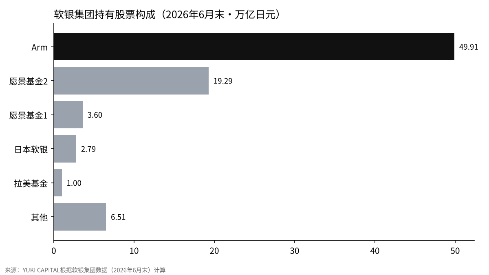
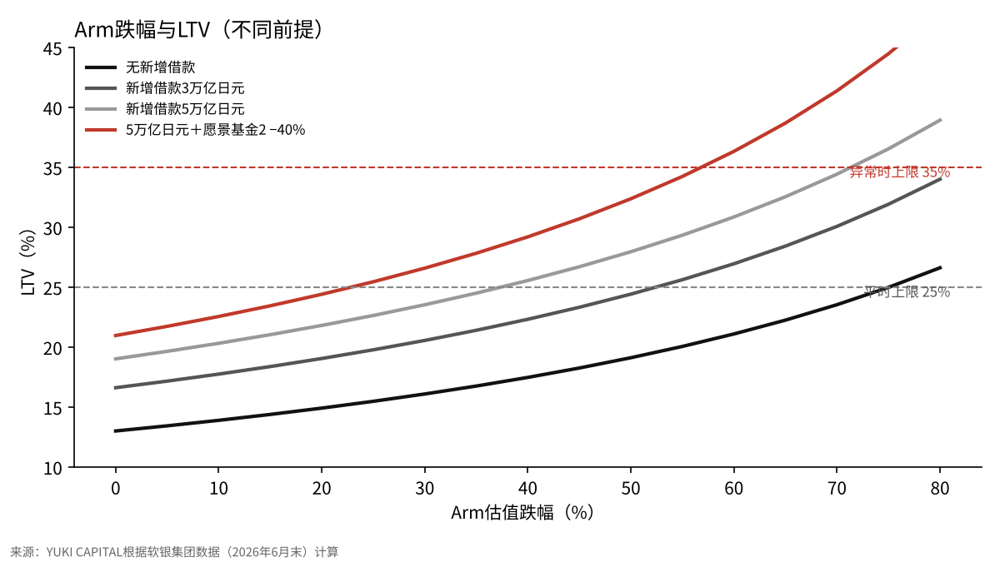

马斯克称软银“拖欠涡轮机货款”、民主党掌控国会，会把软银集团的财务撼动到什么程度？
2026年11月6日，埃隆·马斯克在X上写道，软银集团（SBG）正在拖欠其涡轮机订单的款项[1]。同一周，美国中期选举中民主党拿下参众两院多数，AI和半导体股票遭到大幅抛售[4][12]。
本文要检验的问题是：Arm的估值、与OpenAI相关的持股价值以及新增借款各自变动多少，软银集团衡量自身财务的指标LTV（净负债占持有股票价值的比率）才会接近其自行设定的上限？
本文以软银集团公布的2026年6月末数据为起点，改变三个前提进行计算，确认马斯克的说法和国会的变化分别通过什么途径产生影响。
- 按6月末数据，仅靠Arm下跌让LTV达到平时上限25%，需要下跌75%。仅看股价，余地仍然很大。
- 起作用的是借款。新增借款达到5万亿日元时，Arm只需下跌37%就会达到25%。
- 马斯克的说法和民主党国会都不会直接推动LTV。前者通过融资条件，后者通过包括Arm在内的半导体股价，间接产生影响。需要关注的数字有两个：财报中公布的LTV和新增借款的金额。

问题与背景
马斯克的帖子是在回复一则市场消息：有卖方试图打包出售一批数据中心贷款。据报道，这批贷款中包括与新墨西哥州星际之门（Stargate）项目地相关的2,500万美元融资[1]。帖子既没有给出金额，也没有给出依据；截至报道时，软银集团没有公开回应[1]。当天，软银集团股价盘中下跌超过12%[1]。
星际之门是OpenAI、软银集团、甲骨文等在美国建设AI算力基础设施的计划。2025年1月的公告称将在四年内投入5,000亿美元，并由软银集团承担资金方面的责任[2]。公告次日，马斯克写道，软银集团确保的资金远低于100亿美元[3]。此次帖子是这一说法的延续。据报道，软银集团对OpenAI的出资可能超过300亿美元，其中一部分计划通过以Arm股票为担保的50亿美元借款来筹措[11]。
先说明用语。LTV是Loan to Value的缩写，软银集团将其定义为“净负债÷持有股票的价值”[6]。保证金贷款（margin loan）是以所持股票为担保的借款，担保股票下跌时会被要求追加担保或还款。软银集团在计算时，把以Arm股票为担保的借款从持有股票一侧扣除[6]。NAV（资产净值）是持有股票的价值减去净负债后的金额。愿景基金是软银集团运营的、投资于未上市企业等的工具，其中愿景基金2持有对OpenAI的投资[7]。
政治方面，11月3日的中期选举中民主党拿下众议院和参议院的多数[4]。据报道，在得克萨斯州当选的民主党州长一直要求暂停新的数据中心项目并终止税收优惠[5]。将主导众议院监督委员会的议员也表示要加强对马斯克的调查[5]。
数据与方法
起点数据取自软银集团公布的股东价值资料（2026年6月末）[6]。持有股票为83.11万亿日元，净负债为10.81万亿日元，LTV为13.0%，资产净值（NAV）为72.30万亿日元。持有股票中Arm为49.91万亿日元，这是扣除相当于保证金贷款的3.22万亿日元之后的数值。愿景基金2为19.29万亿日元，对OpenAI的投资包含在其中[7][8]。
在财务方针上，软银集团一直表示，LTV在平时保持在25%以下，即使在异常时也以35%为上限[9]。评级机构也把这一比率和手头资金作为评估的核心[10]。
计算尽量简单。设Arm估值的跌幅为d、愿景基金2估值的跌幅为e、新增借款为X，则LTV＝（10.81＋X）÷（83.11−53.13×d−19.29×e）。53.13万亿日元是扣除前的Arm估值（49.91＋3.22），并假设担保借款不会因股价下跌而减少。汇率沿用资料中的1美元兑162.39日元[6]。愿景基金2下跌40%，代表包括OpenAI在内的未上市股票估值被下调。同一周有报道称，Anthropic的上市估值可能从1.5万亿美元降至约1万亿美元，这是AI未上市股票价格被下调约三成的例子[14]。
结果

起点LTV为13.0%，距离25%还有12个百分点的余地。6月末每股NAV为12,686日元，是股价5,963日元的两倍以上[6]。也就是说，市场并没有把持有股票的价值原样反映在股价上。持有股票的60%是Arm，其次是愿景基金2，占23%。软银集团财务上的余地，几乎与Arm一家公司的股价重合。
| 前提 | LTV |
|---|---|
| 起点（2026年6月末） | 13.0% |
| Arm下跌20% | 14.9% |
| Arm下跌40% | 17.5% |
| Arm下跌60% | 21.1% |
| Arm下跌40%＋愿景基金2下跌40% | 20.0% |
仅靠Arm股价让LTV达到25%，Arm估值需要下跌75%。要达到35%，则需要下跌98%，几乎是全部损失。仅凭股价下跌，很难触及方针上限。
敏感度分析

真正起作用的是借款增加的情形。若新增借款3万亿日元，在Arm和愿景基金2都下跌40%时，LTV为25.5%，超过平时上限。若新增5万亿日元，同样条件下为29.2%。
| 新增借款 | Arm 0% | Arm −20% | Arm −40% | Arm −60% |
|---|---|---|---|---|
| 0万亿日元 | 13.0% | 14.9% | 17.5% | 21.1% |
| 3万亿日元 | 16.6% | 19.1% | 22.3% | 27.0% |
| 5万亿日元 | 19.0% | 21.8% | 25.6% | 30.9% |
| 5万亿日元＋愿景基金2 −40% | 21.0% | 24.4% | 29.2% | 36.3% |
在借入5万亿日元、愿景基金2下跌40%的情况下，Arm下跌60%时LTV为36.3%，超过异常时35%的上限。新增借款为5万亿日元时，仅靠Arm让LTV达到25%所需的跌幅缩小到37%。
汇率也有影响。资料按1美元兑162.39日元计算，而11月6日美元兑日元在158日元附近[13]。外币计价的持股越多，日元升值就越会减少持股的日元价值，推高LTV。若把日本国内软银股份（2.79万亿日元）以外的持股都视为美元计价、净负债维持日元不变，则在158日元时LTV为13.4%，在150日元时为14.0%。仅汇率的影响，与股价和借款相比很小。
讨论
先看相反的观点。LTV为13.0%，离方针上限很远，NAV有72.30万亿日元。马斯克领导的xAI是竞争对手，他的说法既没有金额也没有依据[1]。按这一观点，此次下跌是声誉上的波动，而不是财务上的波动。
即便如此，LTV是由股价和借款两者决定的数字。如果用借款来筹措对OpenAI的追加出资或星际之门的资金，分子的净负债就会增加。以Arm股票为担保的借款，其结构是Arm越跌越会被要求追加担保[11]。与其说马斯克的说法是否属实，不如说资金是否依赖借款，才是推动LTV的因素。
民主党国会的影响还没有成为法律。不过，对AI和半导体企业加强监管的担忧，在选举次日让半导体股价大幅下跌[12]。Arm是半导体设计公司，这种担忧可以通过其股价波及软银集团六成的持股。
也写明本文的局限。起点是6月末的数据，不包括11月的股价下跌。OpenAI的估值作为愿景基金2的一部分统一处理，没有单独拆分。新增借款3万亿和5万亿日元是假设，并非软银集团计划中的数字。LTV的定义是软银集团自己的，评级机构有时会做不同的调整[10]。
检验标准有三个。11月10日财报中公布的LTV是否超过20%？对OpenAI和星际之门的资金是否偏向借款？Arm是否持续比6月末低40%以上？三者中有两者成立，本文的结论就需要改写。
结论
按6月末数据，仅靠Arm下跌让LTV达到平时上限25%，需要下跌75%。仅看股价，余地仍然很大。
起作用的是借款。新增借款达到5万亿日元时，Arm只需下跌37%就会达到25%。
马斯克的说法和民主党国会都不会直接推动LTV。前者通过融资条件，后者通过包括Arm在内的半导体股价，间接产生影响。需要关注的数字有两个：财报中公布的LTV和新增借款的金额。
我的看法
自星际之门启动以来，马斯克就一直说软银集团没有那么多资金。我认为这次的帖子也是同一条线上的延续。我认为最危险的是对OpenAI的出资和以Arm股票为担保的借款。Arm一旦下跌，软银集团就必须追加担保，我想那会相当艰难。我没有持有软银集团的股票，但我对11月10日的财报很感兴趣。我想用财报公布的LTV和借款内容，来核对本文的数字。
参考文献
- OfficeChai, "Softbank Is Defaulting On Its Turbine Orders, Claims Elon Musk", 2026-11-07, https://officechai.com/ai/softbank-is-defaulting-on-its-turbine-orders-claims-elon-musk/
- OpenAI, "Announcing The Stargate Project", 2025-01-21, https://openai.com/index/announcing-the-stargate-project/
- Axios, "Musk throws shade at Stargate", 2025-01-22, https://www.axios.com/2025/01/22/stargate-elon-musk-trump-altman-openai-project
- ABC7, "Midterm election 2026 live results: Dems take back Congress", 2026-11-04, https://abc7news.com/live-updates/midterm-elections-2026-live-updates-election-results-key-races-us/20001292/entry/20013786/
- The Star（路透社）, "Elon Musk's business empire braces for Democratic wave as Texas flips blue", 2026-11-04, https://www.thestar.com.my/news/world/2026/11/04/elon-musk039s-business-empire-braces-for-democratic-wave-as-texas-flips-blue
- 软银集团, “股东价值（SOTP）与LTV”（2026年6月末）, https://group.softbank/ir/stock/sotp
- 软银集团, “2027财年第一季度财报”, 2026-08-06, https://group.softbank/news/ir/20260806_1
- 软银集团, “财报数据表 2027财年第一季度”, 2026-08, https://group.softbank/media/Project/sbg/sbg/pdf/ir/presentations/2026/earnings-datasheet_q1fy2026_02.pdf
- 软银集团, “综合报告2022（财务战略）”, https://group.SoftBank/system/files/pdf/ir/financials/annual_reports/annual-report_fy2022_03_ja.pdf
- 日本评级研究所（JCR）, “软银集团评级报告”, https://www.jcr.co.jp/download/3d6b75332f9b6de2b66ad7f2a635ada5ebea0770d0e8e2a850/23d1586.pdf
- Tom's Hardware, "SoftBank is seeking $5 billion loan to invest in OpenAI, plans to use Arm shares as collateral", https://www.tomshardware.com/tech-industry/artificial-intelligence/softbank-is-seeking-usd5-billion-loan-to-invest-in-openai-plans-to-use-arm-shares-as-collateral-rapid-ai-expansion-continues-investment-could-top-usd30-billion
- investingLive, "Nikkei drops 3% as Democratic midterm gains hit AI and chip stocks", 2026-11-04, https://investinglive.com/stock-market-update/nikkei-drops-3-as-democratic-midterm-gains-hit-ai-and-chip-stocks/
- 日本银行, “时间序列统计数据（汇率）”, https://www.stat-search.boj.or.jp/
- Decrypt（经Yahoo Finance）, "Anthropic IPO Valuation Could Be Slashed in Half to $1T After AI Stock Rout: Report", 2026-11-07, https://finance.yahoo.com/markets/stocks/articles/anthropic-ipo-valuation-could-fall-162858848.html
图表由YUKI CAPITAL制作。头图：Tom Arran（Unsplash）
每天的数字和判断，我都记录在X上。